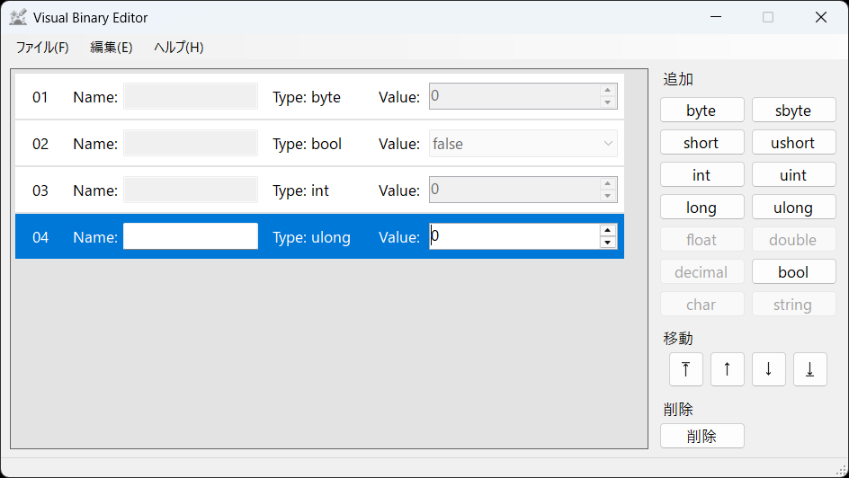

チュートリアル: バイナリファイルの読み込み
チュートリアル: バイナリファイルの作成で作成したtutorial.binを読み込みます。
以下のようなプログラムを実行してバイナリファイルを読み込むとします。
byte saveFileVersion;
bool isCompleted;
int stageID;
ulong totalScore;
// ...
using (BinaryReader reader = new BinaryReader(fileStream))
{
saveFileVersion = reader.ReadByte();
isCompleted = reader.ReadBoolean();
stageID = reader.ReadInt32();
totalScore = reader.ReadUInt64();
}
Visual Binary Editorを起動し、右側の操作盤からbyte, bool, int, ulongの順にボタンを押します。
ⓘ INFO
Visual Binary Editorでバイナリファイルを読み込むためには、先にバイナリオーダーを作成しておく必要があります。
言い換えると、バイナリの構成が分かっているバイナリファイルである場合にのみ読み込むことが可能です。
以下のようになれば問題ありません。

バイナリオーダーを作成出来たら、メニューバーのファイル(F)にある開く(O)を選択し、tutorial.binを開きます。
以下のように読み込まれます。
💡ヒント
バイナリオーダーとバイナリファイルの構成が異なっている場合、
「ファイルのデータよりバイナリエントリが多いです。現在のバイナリオーダーがファイルのバイナリの構成と異なっている可能性が高いです。」や
「ファイルのデータよりバイナリエントリが少ないです。現在のバイナリオーダーがファイルのバイナリの構成と異なっている可能性があります。」といったダイアログが表示されます。
その場合は、バイナリオーダーが間違っていないか確認してください。
それでも同じようなダイアログが表示される場合、tutorial.binの作成で間違っている可能性があります。